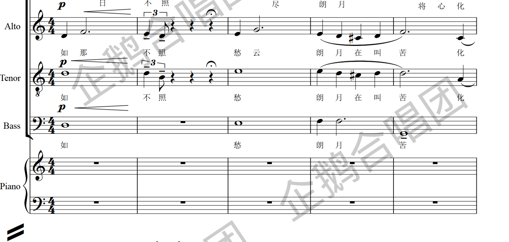
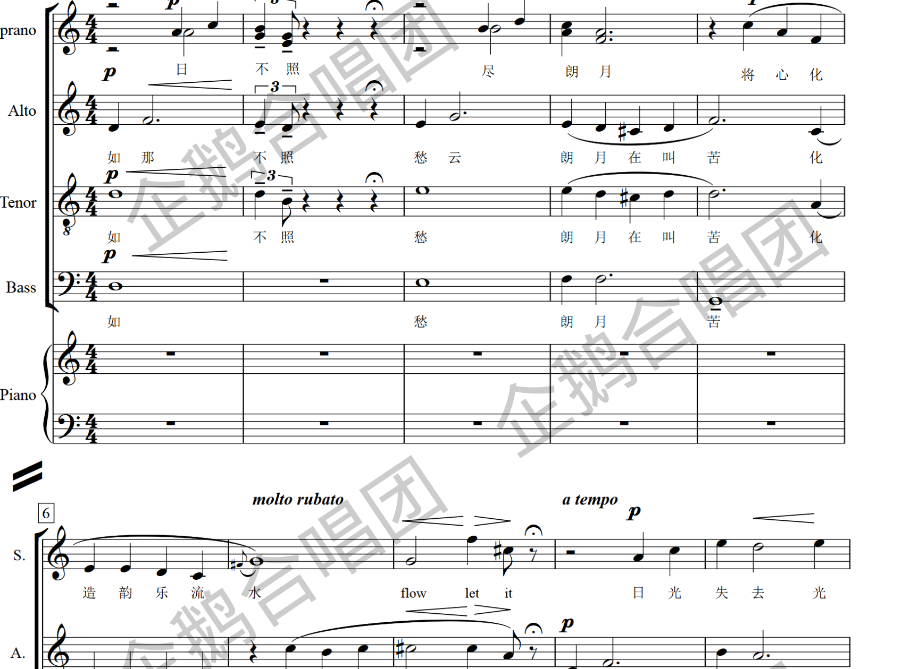
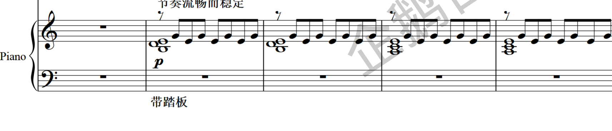
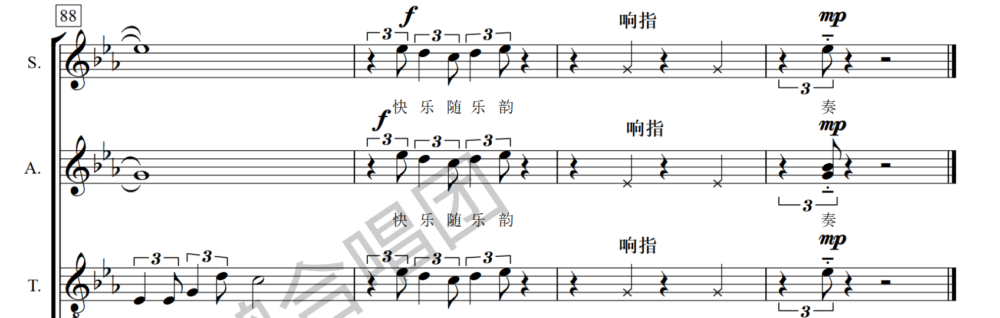

你手里这几张纸，密密麻麻爬满了小蝌蚪、横线、洋文缩写，看起来像是外星人的信。别慌——这篇文章就是你的"翻译机"。读完它，你不一定会唱，但一定能看懂这份谱子在讲什么，甚至能在合唱团里假装很懂地点点头。
目 录
1先认识这张"地图"
在钻进符号之前，先看清全局。
这是一首混声四部合唱作品，配钢琴伴奏。所谓"混声四部"，就是把人的嗓音按高低分成四组，从上到下摞起来，像一栋四层楼：
合起来英文缩写是 SATB——记住这四个字母，你在任何合唱谱上都不会迷路。谱子最左边那一列 Soprano / Alto / Tenor / Bass 就是在告诉你："这一行是给谁唱的。"最下面还有一栏 Piano，那是钢琴的活儿。

2五线谱：五根线的秘密
五线谱，顾名思义就是五条平行横线。音符（小蝌蚪）就住在这些线上和线之间的空里。规则简单到不讲道理：
位置越高 = 声音越高；位置越低 = 声音越低。
就这么一句话。蝌蚪往上爬，音就往上飙；往下沉，音就变闷。下面这张图帮你一眼看穿五线谱的"户型结构"：
3谱号：开门的三把钥匙
五条线本身是"空房子"，你得先在最左边放一个谱号，它就像门牌号，告诉你"这几条线分别代表哪几个音"。这首歌里出现了两种：
好记的办法：高音谱号那个花体像字母 G（它就是从 G 演变来的），管高的声音；低音谱号又叫 F 谱号（由字母 F 演变而来），长得像反写的 C 带两个点——那两个点正好夹住第四条线，宣告"这条线就是 F 音"，专管低的声音。这首《韵乐共流》里，女高、女低、男高三行用高音谱号，男低和钢琴左手用低音谱号——楼层高的用高音钥匙，住地下室的用低音钥匙，合情合理。
4拍号与速度：音乐的心跳
紧挨着谱号，有两个上下叠放的数字，这首歌是 4 / 4。这就是拍号，是音乐的"节奏合同"：
| 数字 | 含义 | 大白话 |
|---|---|---|
| 上面的 4 | 每小节有 4 拍 | 每一"格"里数 4 下 |
| 下面的 4 | 以四分音符为 1 拍 | 用哪种音符当作"1 下"的标准 |
所以 4/4 拍 = "强、弱、次强、弱"循环数四下，是流行歌、进行曲最常见的拍子，你跟着点头正好一小节点四下。
再看速度：这歌有几种"心跳"？
谱子上方常有像 ♩ = 96 这样的标记，意思是"每分钟走 96 个四分音符"，数字越大越快。更妙的是，中国作曲家喜欢在旁边写上中文情绪提示。这首歌至少换了两种"心跳"：

5调号：那几个降号是干嘛的
这首歌藏着一个"小心机"。开头，谱号后面什么升降号都没有——干干净净，这叫 C 大调（钢琴上全白键的那个调），最朴素、最纯净。
但唱到后半段（大约第 55 小节之后），谱子突然在每行开头多出了三个"♭"（降号）。这就是调号变了——转到了 降 E 大调。

6音符：蝌蚪们能唱多久
同样是小蝌蚪，为什么有的是空心、有的是实心、有的还拖着小尾巴、甚至几只连在一起？因为它们在告诉你这个音要唱多长。这是零基础最需要的一张表：
规律超简单："越空越长，越黑越尾巴多就越短"。空心大白脸 = 悠长；实心还拖着小旗子（或几只被一根横梁连起来）= 短促紧凑。相邻两个音符之间的关系永远是"打对折"：全音符 = 2 个二分 = 4 个四分 = 8 个八分……像分披萨一样。
7力度记号：这一句要唱多大声
光知道唱多长还不够，还得知道唱多大声。作曲家用一套来自意大利文的字母缩写来标注音量，它们几乎是全世界通用的"表情包"。这首歌从最轻到最强都用到了：
| 记号 | 意大利原文 | 意思 | 大概多大声 |
|---|---|---|---|
| pp | pianissimo | 很弱（比 p 还轻） | 🔈 气若游丝 |
| p | piano | 弱 | 🔈 轻声细语 |
| mp | mezzo-piano | 中弱 | 🔈 稍微收着点 |
| mf | mezzo-forte | 中强 | 🔉 正常说话音量 |
| f | forte | 强 | 🔊 放开唱！ |
| ff | fortissimo | 很强（比 f 还猛） | 🔊🔊 全团火力全开 |
| fp | forte-piano | 先强后立刻转弱 | 🔊→🔈 "轰"一下马上收 |
规律：看到 p（piano）就是"轻"，看到 f（forte）就是"响"；前面加个 m（mezzo=中）就是"没那么极端"，字母重复一次（ff）就是"更极端"。它们像调音量的旋钮：pp → p → mp → mf → f → ff，一格比一格响（另外还有个"淘气的" fp：先猛地强、再立刻收弱）。这首歌开头用 p 轻轻诉说，到结尾大合唱一路冲到 f、再到 ff（很强），情绪就是这样一级一级被推上去的。
还会"渐变"：那些像放大镜的夹子
谱面上你会看到一些拉长的 < 和 > 形状（专业叫"渐强/渐弱记号"，俗称"小夹子"或"鱼嘴"）：

8表情术语：那些神秘的洋文缩写
除了音量，谱上还散落着一些斜体小字，它们是作曲家的"导演旁白"，告诉歌者用什么感觉去唱。这首歌里出现的，翻译如下：
| 术语 | 意思 | 导演在说 |
|---|---|---|
| legato | 连奏 / 圆滑 | "一个字一个字黏着唱，别断开，像丝绸一样顺。" |
| molto rubato | 非常自由地伸缩节奏 | "这里别机械踩拍，带着情绪呼吸。" |
| a tempo | 回到原速 | "好了，任性够了，回到正常速度。" |
| cresc. | 渐强（crescendo 的缩写） | "从这里开始，声音一点点变大、往上顶。" |
| 自由地 | 速度自由 | "开头像独白，慢慢来。" |
| 优雅地 | 优雅、从容 | "钢琴进来了，端起气质。" |
| 节奏流畅而稳定 | 给钢琴的提示 | "伴奏别忽快忽慢，稳稳托住大家。" |
| 带踏板 | 钢琴踩延音踏板 | "让声音更绵长、更有共鸣。" |

9特殊符号：三连音 · 连线 · 重音
再教你认几个这首歌里反复出现的"高频符号"，认全它们，你的"识谱段位"就够用了：
① 三连音 3 —— 把两个音的时值，塞进三个音
看到一串音符上方架着一根横线、正中写着一个 3，这就是三连音：本来该唱 2 个音的时间，硬塞进 3 个均匀的音。效果是节奏突然变得"叮铃铃"地滚动起来，很有流动感——这也正是《韵乐共流》里那种"水波荡漾"感的来源，全曲用了大量三连音。
② 连线（连音线 / 圆滑线）—— 别换气，连起来
横跨在几个音符上方（或下方）的那道弧线有两种含义：如果连的是相同的音，叫"延音线"，意思是"两个音合成一个长音，中间不要断"；如果连的是不同的音，叫"圆滑线"，意思是"这几个音要唱得连贯圆润，别一顿一顿"。总之看到弧线，就想到"顺滑、别硬断"。
③ 重音记号 > 与 marcato v —— 这个字要"戳"一下
音符上方一个小小的 >（大于号）叫重音，意思是"这个音要唱得特别有劲、突出一下"；而像个小楔子、开口朝下的 v 形记号（marcato，强音记号，戴在音符头上）则是"更强调、更有棱角地咬住"。在这首歌里，它出现在结尾高潮，也出现在中段哼鸣（mm）的长音上——配合 fp、三连音和 f，把每个音都咬得斩钉截铁，情绪推到最满。

10全曲最有趣的彩蛋：响指
如果你在谱子里发现某几行的音符不是圆圆的蝌蚪，而变成了一个个 × （叉叉），还配着"响指"两个字——恭喜你，找到了这首歌最好玩的地方。
那个 × 形状的符头，是一种特殊记谱法，专门用来表示"这里不是唱出来的音高，而是发出某种声音效果"。而"响指"就是字面意思：用手指打响指！
11把它们串起来：《韵乐共流》的一次旅程
现在你已经认识了所有零件，我们像看电影一样，从头到尾走一遍这首歌的"情绪地图"：
第一幕：全曲用 p（弱）在纯净的 C 大调里轻轻起唱，"自由地"像一个人望月独白。
第二幕：钢琴带着延音踏板流动进来，标记"优雅地"，大量三连音让音乐像水一样荡开——这正是"韵乐共流"四个字的画面。
第三幕：全体打起响指（× 符头），音乐悄悄转调到更温暖的降 E 大调，为最后蓄力。
第四幕：四个声部火力全开，从 f（强）一路冲到 ff（很强），满是重音与三连音，唱出"世界万人，投出每份爱，愿和平""蓝蓝是青天，快乐随乐韵"，并在结尾集体打起响指——所有愁云在歌声里散去，情绪抵达顶点。
✓速查小抄（存好这一张就够了）
| 你看到的东西 | 它在说什么 |
|---|---|
| 最左边 S / A / T / B | 四个声部：女高、女低、男高、男低 |
| 五条横线 + 蝌蚪 | 位置越高声音越高，越低声音越低 |
| 花体 G / 反C带点 | 高音谱号 / 低音谱号（哪几条线代表哪些音） |
| 4 / 4 | 每小节 4 拍，以四分音符为一拍 |
| ♩ = 96 / 100 | 速度：每分钟多少拍，数字越大越快 |
| 行首几个 ♭ | 调号；这里出现三个降号 = 转到降E大调 |
| 空心 / 实心 / 带尾巴的音符 | 音的长短：越空越长，越黑越短 |
| p / mp / mf / f / ff / fp | 音量：从轻到响（p最轻，ff最猛，fp先强后弱） |
| < 和 > 的"小夹子" | 渐强 / 渐弱（喇叭口张开的方向就是变大的方向） |
| 横线上带 3 的一串音 | 三连音：两拍时间里塞三个音，滚动感 |
| 跨音符的弧线 | 连起来唱，别断、别换气 |
| 音符上的 > 或 v | 重音 / marcato：这个音要用力"戳"一下 |
| × 符头 + "响指" | 不唱，打响指做出节奏音效 |
| legato / rubato / a tempo | 连贯地 / 自由伸缩 / 回到原速 |